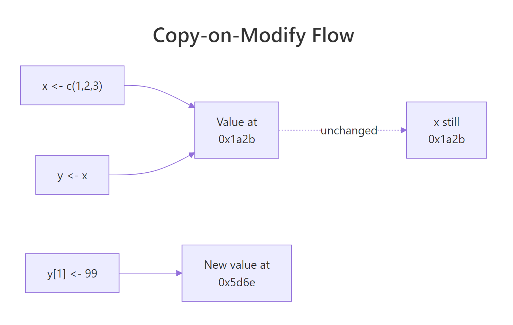
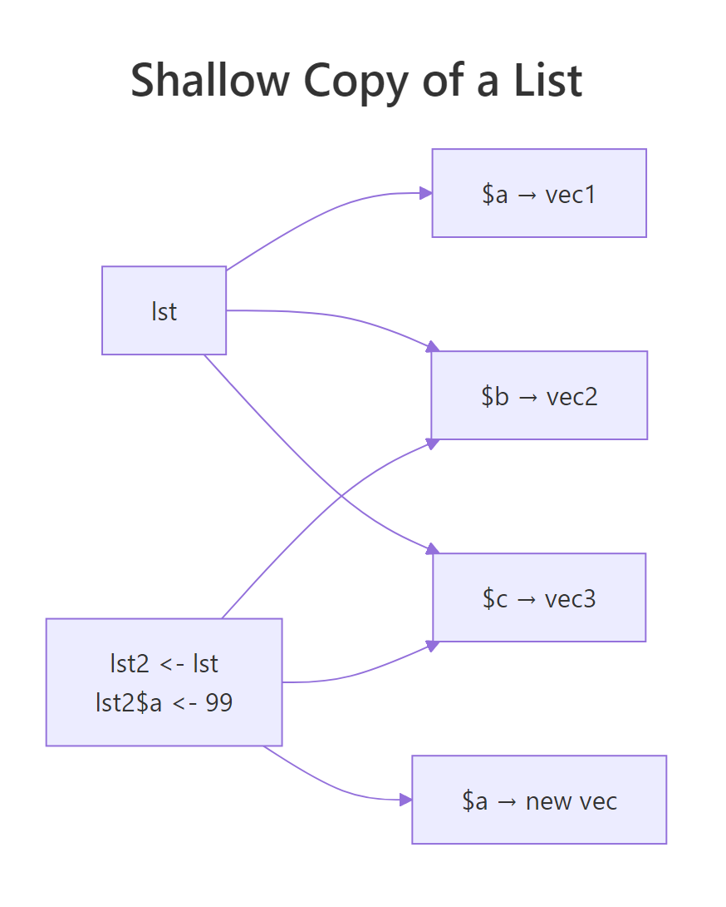
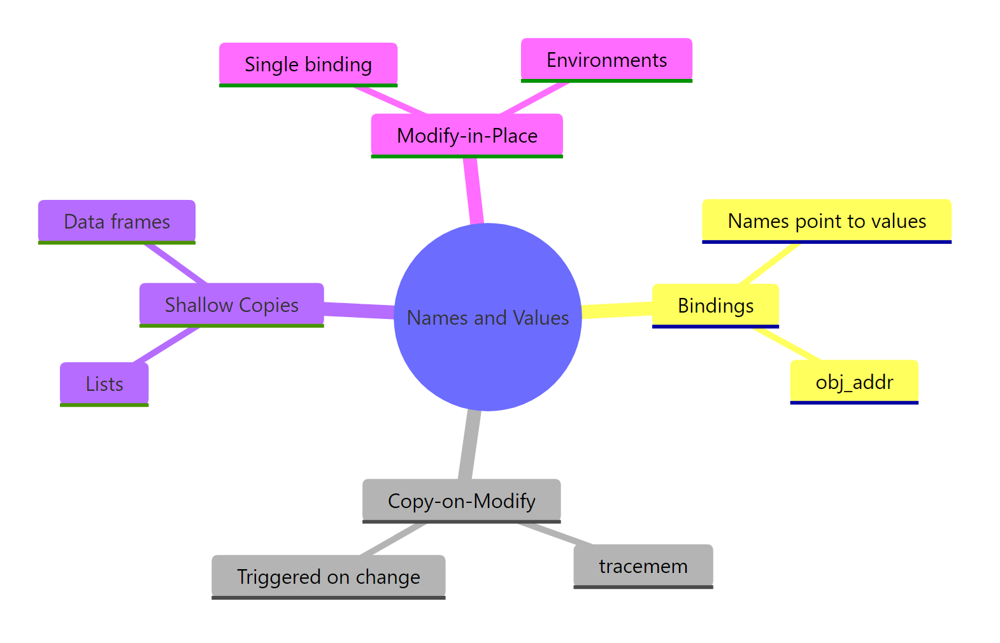

How R Stores Variables: The Copy-on-Modify Rule Every R User Should Know
In R, names point to values, not the other way round. When you write y <- x, R does not copy the data. It only makes a new copy when you actually modify one of them. That rule, called copy-on-modify, is why R feels both safe and, sometimes, unexpectedly slow.
What does it mean for names to point to values in R?
Most languages draw a variable like a box with a value inside. R flips that picture. The name x is a sticky label attached to a value sitting somewhere in memory, and two names can share the same label target. The lobstr package lets you look at those memory addresses directly, so you can see exactly when two names are pointing at the same thing.
Both calls print the same address. Assigning y <- x did not allocate a new vector or copy any numbers, it just stuck a second label on the value that already existed. The three numbers 1, 2, 3 live exactly once in memory, with two names pointing at them.
Try it: Create two vectors ex_a and ex_b where ex_b is assigned from ex_a. Use obj_addr() to confirm they share the same memory address.
Click to reveal solution
Explanation: Assigning ex_b <- ex_a does not clone the vector. R binds the name ex_b to the same underlying object, and obj_addr() returns one address for both names.
When does R actually copy your data?
So far, no copies. The interesting moment is when you change one of the names. The rule is simple: as soon as you modify a bound object, R makes a fresh copy for you and reroutes the affected name to the new copy. The other names keep pointing at the original, untouched. You can watch this happen live with tracemem(), which prints a line every time R copies a traced object.

Figure 1: When you reassign one element of y, R allocates a new value and re-binds y to it. x stays put.
The tracemem[OLD -> NEW] line is R telling you "I just copied this object." x still lives at the original address. y has moved, the old label has been peeled off and stuck to a brand-new vector that happens to look like the old one, but with 99 in position one. This is copy-on-modify in one screen.
y <- c(99, 2, 3) replaces what y points to; writing y[1] <- 99 also replaces it under the hood. In both cases, x is unaffected because x never owned the vector, it only pointed at it.Try it: Use tracemem() on a new vector ex_v, then modify an element. Count how many tracemem lines print. Why that number?
Click to reveal solution
Explanation: One tracemem line prints because R copied the vector exactly once, on the first modification. The old value is now unreferenced and will be cleaned up by the garbage collector.
How are lists and data frames actually copied?
Lists change the picture in one important way. A list isn't a single blob of data, it is a container of pointers to other objects. When you copy a list, R copies the container (the pointers) but not the things the pointers point to. This is a shallow copy, and the ref() function from lobstr makes it visible.
Each element has its own memory address. Now clone the list and change one element, you will see that only the touched element gets a fresh address, while the others are still shared with the original.

Figure 2: Changing lst2$a allocates a new vector for a. The elements b and c keep the same addresses as lst.
Only a got a new address. Elements b and c still live at the same memory as in lst, R is re-using them between the two lists. That is the whole point of shallow copying: changing one column of a 50-column data frame should not force R to re-allocate all 50 columns.
Try it: Copy mtcars to ex_mt, change the mpg column to all zeros, and use ref() on both to confirm that only mpg has a new address.
Click to reveal solution
Explanation: Only the mpg column was reassigned, so R allocated a fresh vector for it. The other ten columns are still the same physical objects shared by both data frames.
When does R modify in place instead?
The copy-on-modify rule has two real exceptions, and knowing them is what separates R users from R tuners. The first is the single-reference optimisation: if R can prove that exactly one name points at an object, it is free to skip the copy and change the bytes in place. The second is environments, which are always reference objects and never copy at all.
Whether the in-place optimisation actually kicks in depends on R's internal reference counter, modern R (4.0+) tracks this more precisely than older versions, so you may see a copy in some older sessions. The takeaway: if a value has a single binding and you have not passed it through other functions, R will often skip the copy entirely.
Environments are the other exception. Every environment is a reference object. Assigning e2 <- e1 does not copy the environment; it makes e2 another handle on the same environment. Mutating through either handle mutates the single underlying environment. That is the only way in base R to get true pass-by-reference.
Calling bump(e) did not receive a copy of e. It received the same environment the caller knows about, and mutating it inside the function was visible outside. This is why environments (and packages built on them, like R6) are the canonical way to build mutable state in R.
Try it: Write a function ex_set_flag(env) that sets env$flag <- TRUE. Call it on a fresh environment, then print flag from outside the function.
Click to reveal solution
Explanation: Because env inside the function is the same environment as ex_env outside, the assignment persists. Had ex_env been a list instead, the caller's list would be unchanged.
How does this affect your code's speed and memory?
Every rule you just learned has a dollar-and-cents consequence: copies cost time. A loop that modifies a data frame one cell at a time will, in the worst case, trigger one full column copy per iteration. A vectorised assignment does the same work in one copy. The difference between "slow" and "fast" R code is usually "how many hidden copies am I making?", and tracemem() is how you answer that question.
Both functions return the same data frame. The loop version, however, rewrites df$y a thousand times, and each rewrite copies the y column. The vectorised version does it in one stroke. On a laptop the loop is roughly 10–50× slower for a thousand rows and gets dramatically worse as n grows. Vectorisation is not just cleaner to read, it is copy-on-modify mathematics.
The other side of the coin is that shared values are free. Packing the same vector into a list three times does not triple your memory, the list just holds three pointers at the same address.
The list stores three pointers plus a tiny container, not three copies of the vector. As soon as you modify one element, that element gets copied (copy-on-modify), and the other two still share the original. This is the trick that makes tidyverse-style pipelines, where you chain transformations and re-use intermediate objects, cheap in memory.
Try it: Rewrite the loop below as a single vectorised assignment and confirm they return the same result.
Click to reveal solution
Explanation: seq_len(100) gives the integers 1…100 in one go, and ^2 squares the whole vector at once. No loop, no per-element copy, one final allocation.
Practice Exercises
These capstones combine several concepts from above. Use distinct variable names (my_*) so your exercise work does not clash with the tutorial objects still living in your WebR session.
Exercise 1: Predict the addresses
Read the code below. Before running it, predict which of my_a, my_b, my_c share a memory address after all three lines execute. Then run it and verify with obj_addr().
Click to reveal solution
Explanation: my_a and my_b still share the original vector because neither was modified. my_c triggered copy-on-modify when my_c[2] <- 999 ran, so it now points at a fresh vector while the original is still shared by my_a and my_b.
Exercise 2: Kill the copies in a slow function
The function below is slow because the body grows result$col one row at a time, and each assignment copies the column. Rewrite it so it runs in a single vectorised step. Confirm with tracemem() that the new version triggers far fewer copies.
Click to reveal solution
Explanation: The slow version copies the col column once per iteration (roughly n copies total). The fast version does it in a single vectorised assignment, so tracemem() prints one line regardless of n.
Exercise 3: Explain what ref() shows
Run the code below and use ref(my_lst1, my_lst2) to inspect the result. In plain English, explain which elements are shared between the two lists and why.
Click to reveal solution
Explanation: Only q got a new address because only q was reassigned. Elements p and r still point at the original vectors that my_lst1 created. This is a shallow copy: the list containers differ, but R is re-using every element the modification did not touch.
Complete Example
Here is the whole story in one session. Start with a vector, clone it, modify it, and watch each address. Then do the same with a list and an environment so all four behaviours show up side by side.
Three lessons in one block: vectors copy on modify, lists copy only the touched element, environments never copy at all. If you remember nothing else from this tutorial, remember those three behaviours in that order. Every memory surprise R throws at you will fit one of them.
Summary

Figure 3: A one-screen recap of how R stores variables, when it copies, and when it doesn't.
| Concept | What it means | How to check |
|---|---|---|
| Binding | A name is a label pointing to a value | lobstr::obj_addr() |
| Copy-on-modify | Copies happen on change, not on assignment | base::tracemem() |
| Shallow copy | List/data frame copies share untouched elements | lobstr::ref() |
| Modify-in-place | Single-ref objects skip the copy | Compare obj_addr before/after |
| Reference semantics | Environments (and R6) always mutate in place | Pass to a function and re-check |
object.size() and friendlier than .Internal(inspect).References
- Wickham, H., Advanced R, 2nd Edition, Chapter 2: Names and Values. Link
- lobstr package documentation,
obj_addr(),ref(),obj_size(). Link - R Documentation,
tracemem()reference. Link - Brodie Gaslam, The Secret Lives of R Objects: NAMED, REFCNT, and ALTREP. Link
- R Core Team, R Internals manual. Link
- data.table, Reference semantics vignette. Link
Continue Learning
- R Data Types, Once you know where values live, the next question is what kind of value R thinks you have.
- R Lists, Lists are the workhorse of the shallow-copy story; this tutorial goes deep on how they are built and indexed.
- Writing R Functions, How function arguments use copy-on-modify, and why environments are the escape hatch when you need mutable state.